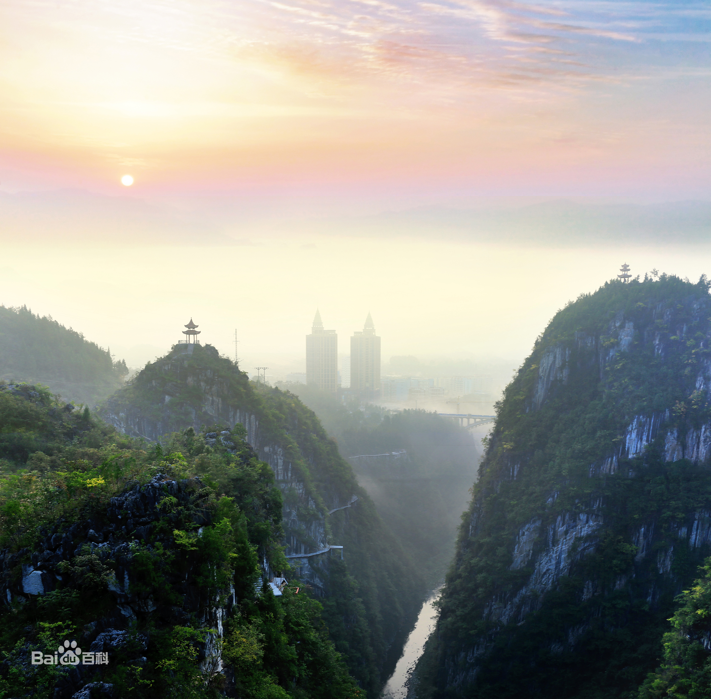
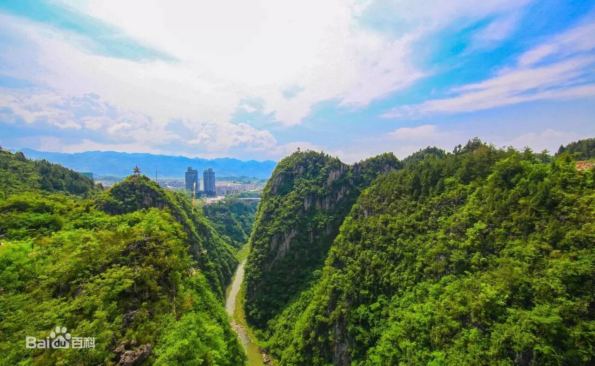
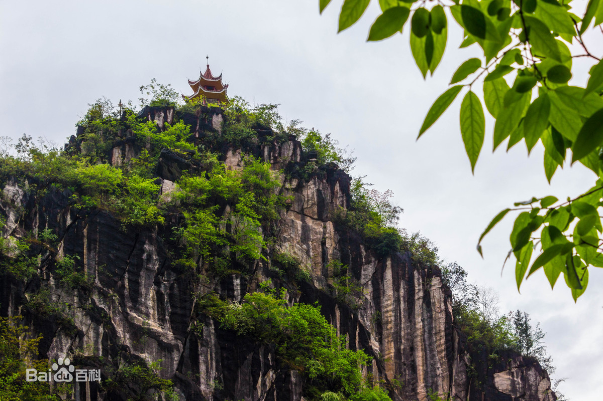
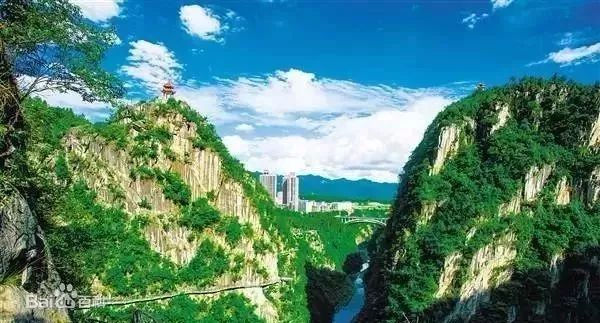
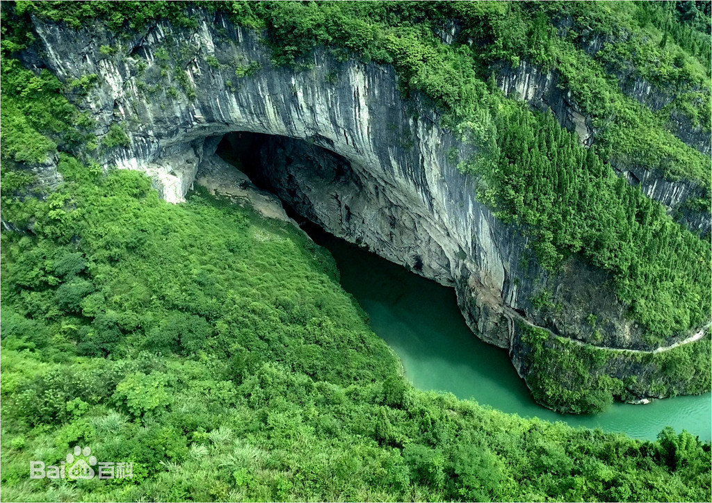

基本概况

“城市大峡谷”是重庆黔江的形象符号，代表黔江的山水和文化，是一种人文理念，一种生活方式，一种旅游形象，是将所有的美好、所有的神秘、所有的人文聚集，形成的一个人格化、物格化的聚合体。

黔江“城市大峡谷”，有亚洲第一峡谷城美誉，因而成为重庆黔江旅游主题口号中国峡谷城·武陵会客厅”的“关键词”。

黔江“城市大峡谷”自然融合度高，气势宏大。登高远望，恰似一条绿色丝绦，将老城新城逢合在一起，绘就一幅名副其实的“城即景、景即城”的水墨丹青。谷宽80-100米，平均深度200米，最大落差500米；峡谷峭壁直立，崖壁大多与地平线成直角。当你走上808米长的空中栈道，尤其是悬挂在500米高空的透明玻璃栈道，大有“我要飞”的刺激感；两侧峰峦起伏，鬼斧神工，呈现出中国西南典型的喀斯特地貌，40多个奇特的砾岩溶洞品质上乘，世界少有，洞内常年恒温18℃。

黔江“城市大峡谷”，其实就是一座国内罕见的由峡谷和溶洞撑起的城市。
美景一览


自然风光
整条峡谷生态底图良好，源头武陵山石林如黛，八面山密林通幽、丹砂髓嫩鲁直遗恨；两侧环聚观音石刻、红土湾老屋基洞旧石器遗址、恐龙化石、丹兴古城、石城故县、河谷风光、丹霞地貌、文峰塔、西部“红旗渠”南海堰、仰头卧佛，景区丰度堪称珍品。